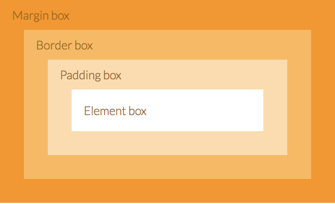

Margin, Border and Padding are all styles that you can create in your CSS that will aid you in how to format your elements in HTML. But before we can talk about why they are different, we should first talk about what each of them do.
The margin property is what defines the space around the HTML element. An example of an element is seen below.
example of HTML element:
<p>I am an element<p>
The margin is the space between what you have in the element, which in this case is the paragraph <p>, and what it is surrounded by.
Lets have a look at that example again, this time take into account the gray space that encases the text and the red line around it.
<p>I am an element<p>
Now that I've added some visual aid to the example, as mentioned before, think of the gray space as your element. The red line around it represents the size of its margin. You can set your code, this can be any code as long as it is in an element, to have a property that allows it to exist with the specified amount of red space from its neightbour.
Still don't quite get it? Picture this. The element is the house you are about to build. The land you want to build on is between two other houses. Part of the building decision is where to put up your fence. The neighbour to your left plays loud music all the time, morning, noon and night, while the one to your right are lovely and quiet and owns two fluffy dogs. Becasue you like your sleep too much and also appreciate furry friends, you decide to build your fence closer to the right side (with the furry friends) and farther away from the left and all the noise. The fence represents your margin and what its value means.
The properties or "rules" that the margin can contain can be described as margin-top, margin-right, margin-bottom and margin-left so you can specify how much space you would like from its surroundings with respect to position. you can also simply use margin to describe these values as well, the direction of which goes clockwise starting from the top.
for example:
margin: 20px 10px 20px 10px;
The example above shows that margin has been set as 20px from top, 10px from right, 20px from bottom and 10px from left of element.
Note: The actual value of the margin can be negative. This would mean that you can actually set your elements to overlap!
Remember elements? Well like margins, borders can be applied to most HTML elements as well.
example of borders:
Solid
Dashed
Dotted
The examples shown above are the three most common types of borders that can be applied to most elements. Similar to margin, the thickness or border-width can be changed to any value you like. However, unlike margin, these values cannot be negative
Below are a couple of examples of how to set border-width properties:
border-width: 10px
This method will set all sides of the border to 10px thickness, while
border-width: 10px 20px 10px 20px
will set the top/bottom to 10px and right/left to 20px (clockwise like margin).
Note: If you take a closer look at the example of borders above, you will notice that the border is nested inside the gray area. This is because the elements have been preset with its maximum size in CSS, which means that the borders cannot exceed that limit.
More curious about what you can do with border? Here is a link to HTML Dog with some helpful diagrams and explanations of how it all work.
Now that we've got Margin and Border out of the way, we can start talking about Padding. Remember how margin is the space outside the element? Padding, like how it sounds, is what happens on the inside of the element. It is the opposite property of margin. Padding generates space around an element, inside of any defined borders. Here is what it looks like along side each other.
As mentioned before, margin represents the outside of the element, padding is the area wrapped inside the border and represents how much space is between the content of the element (in this case the text "Element Box") and its maximum size.
Spacially speaking we can look at it mathematically:
element + padding = actual size (includes border)
Still dont quite understand? Another way to think about it is to remember the last time you've had to move house. When you are packing glassware in a big box you want a lot of padding to stop it from breaking. While with books, they don't need much padding if at all. CSS padding works the same way, where as in this example the elements are the glassware/books and the space between those objects are all padding.
Like the other two properties, the size of the padding can be specified by using padding, padding-top, padding-right, padding-bottom and padding-left. Here are some examples:
padding: 0;
which means no padding or "space" between the content and its borders. Or
padding; 10px 0px 10px 0px;
so going clockwise starting from top this means that the top and bottom have a padding of 10px, while left and right have none.
Note: Like borders, the value property of padding cannot be negative, as you cannot take space out of an area that does not exist.
If you have been following along with this blog and you already know the answer then YAY! It means that this technical blog has served its purpose!
But if the answer hasn't quite presented itself to you yet then don't worry. To put it simply, all three properties deal with space with respect to the container of the element. Margin deals with the outside, while border and padding deal with the inside. Border and padding are both limited to the actual size of the container that the element is nested in. While border is the lining of the container, padding is the only property that comes into direct contact with the actual content.